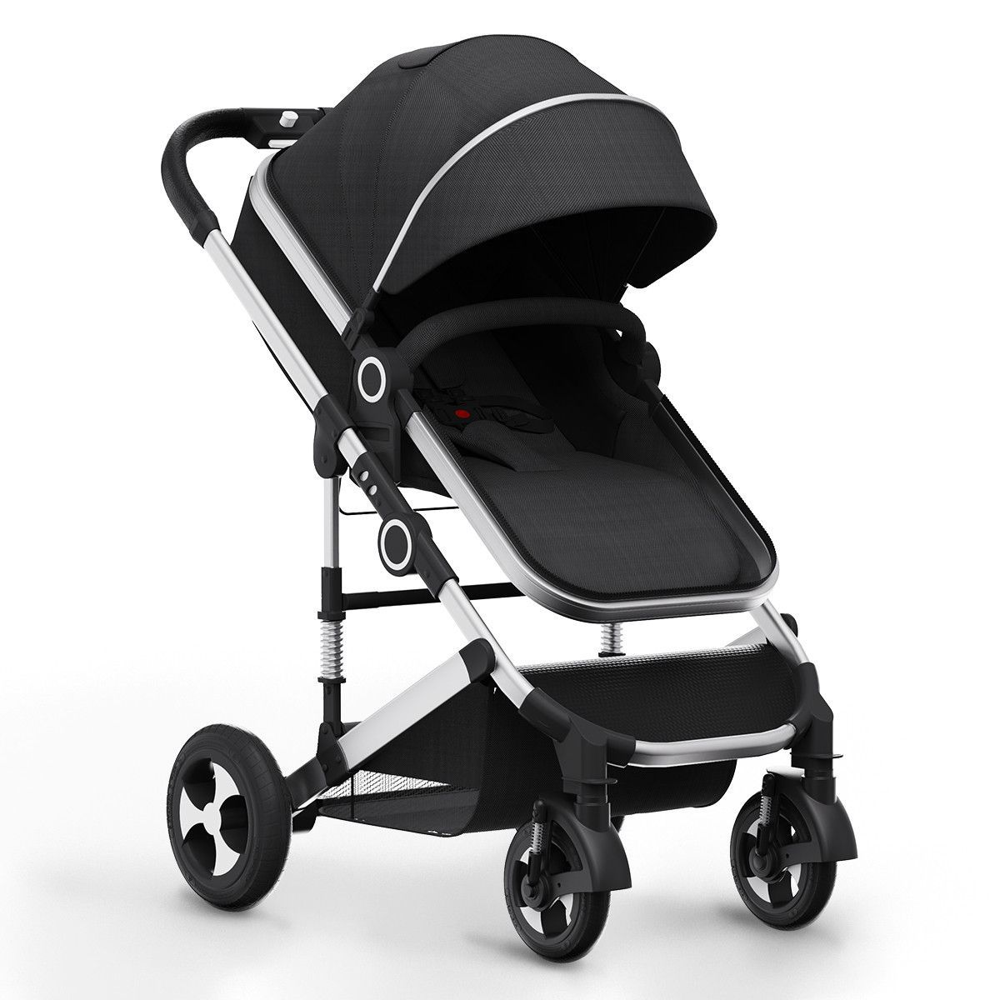
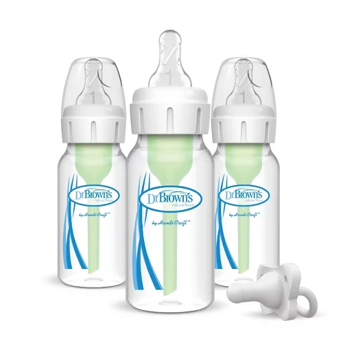

Shop Page
Here you can find helpful products for moms and babies. This page is made to help new moms shop easier and make better decisions. Each product has a price, short information, and links to shop or learn more.
Helpful Baby Products

Everyday Stroller
$120 - $250
A stroller is helpful for walks, shopping, and traveling with your baby. Look for one that is light, safe, and easy to fold.
Shop
Infant Car Seat
$90 - $220
A car seat is one of the most important baby items. It helps keep your baby safe during car rides and should fit your baby’s age and weight.
Shop
Baby Bottles
$10 - $35
Bottles are helpful for feeding, pumping, or formula. It is good to choose bottles that are simple to clean and comfortable for the baby.
Shop
Baby Swing
$70 - $180
A baby swing can help calm the baby when mom needs a small break. It is nice for relaxing, but babies should always be watched.
Shop